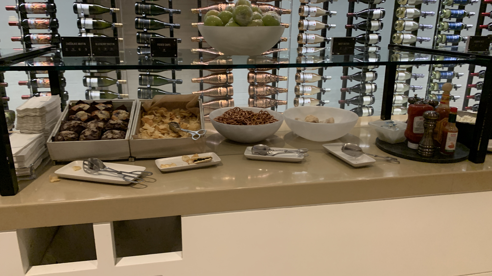
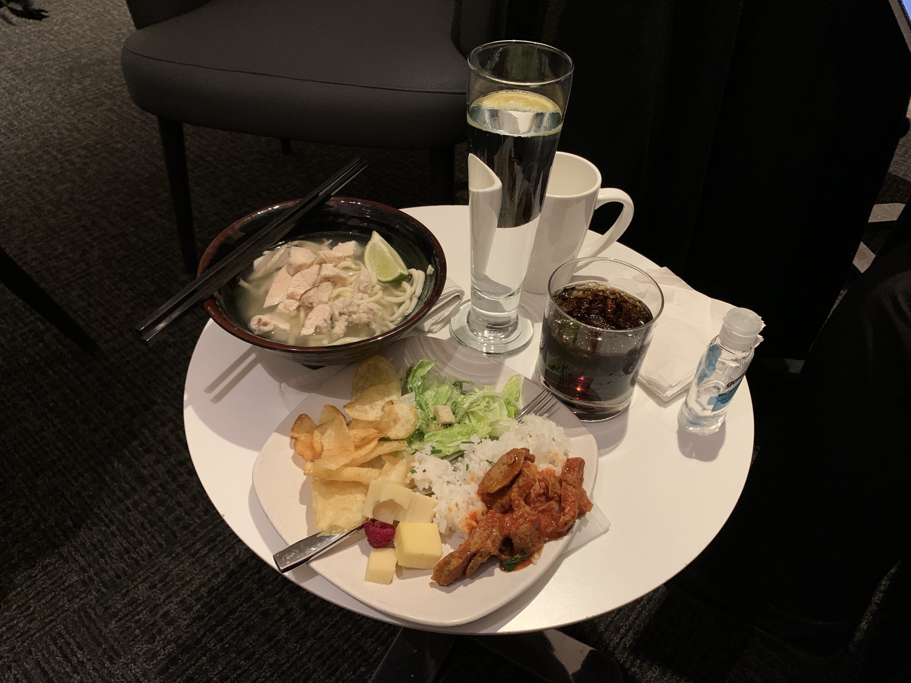

Post_Title
REMEMBER TO DELETE THE COMMENT

After a long walk from the previous flight, I took the 40-minute walk to the Star Alliance Gold lounge in the Tom Bradley International Terminal. Lounges were upstairs from the departure level. Thankfully, this is all airside, so no need to re-clear security.
The lounge agent at the door warned me that there would be no announcement for my flight, but I assured her that I would be monitoring the time and would leave myself enough time to get back to Terminal 7. However, announcements for Star Alliance international flights (as well as a few other flights that uses this as a contract lounge at the time, including a Virgin Atlantic flight and a Qantas flight) were broadcast.
FIDS screens were present throughout the lounge. They listed flights from this terminal (where eligible passengers are invited to this lounge). My flight was not listed. I really want to say that all flights on these FIDS screens were announced, but I am not sure if that was the case.
Immediately after entering, there are a few “private” rooms. Good idea if you're early, unlike me.
A desk that doesn’t seem to be staffed, but I’m guessing to help with day-of-travel needs (including rebooking).
A lounge seating area in the middle of the lounge.
An indoor balcony seating area, overlooking the departure level.
Comfy seating in the center, not too far to the buffet spread.
A bar that was closed due to LA County Covid restrictions (I think).
Coffee station with a small “bakery” (really just a bunch of bread selection).
Drinks station with alcohol.
Seating next to the buffet, which I’d avoid (unless I'm only here to get some food) due to the traffic.
The buffet spread seems quite nice. Cold options were available (I had some of the Caesar salad)…

Room-temperature snack/shelf items like chips, muffins, and pretzels…
Hot items, and desserts (like cheese and blueberry cake).
Here is another drinks station, which I visited more often than the other.
I sat in a “comfy chair” seating area, but I didn’t get a photo of it..
Here’s another coffee machine.
A noodle bar (which I thought was overrated).
A TV room, although I don’t know if one could change the channel/show/movie.
My favorite part was the outdoor seating, which had fireplaces running!
It did seem like very few people were wanting to go out, though. Being an outdoor person, I enjoyed standing out. At the time, they wanted people to wear masks even while outside due to Covid.

Here were my selections from the buffet.
Since I knew that I was going to sleep on the next flight but wanted to try something from the machine, I had a hot chocolate. It was watery. I’d rather have the Swiss Miss that I can never seem to get right, for some reason.
The lounge was basically on the top level of this concourse, the indoor balcony seating overlooked the departures area.
One can see the duty-free shopping area, as well as the entrance to the tunnels of the western satellite concourse.
This lounge earned many consecutive awards for the “Best Airline Alliance Lounge” from Skytrax. I could partially see why they earned that award for five consecutive years.
Unfortunately, the part of the lounge I was most looking forward to (the showers) was closed. I was quite disappointed in that, but it was not enough to diminish the entire experience. As I had an overnight mid-continental redeye coming up, I was hoping to use the showers to clean up before the flight, but it was no big deal.
Other than the lack of showers, I enjoyed the lounge. This is one of the better lounges that are offered in the Continental United States and this lounge is something I would use in a longer connection. I was able to get some work done. The food is something that I enjoyed, so I ended up eating dinner here. I originally planned to get something to eat after getting back to Terminal 7, but I ended up having a late-night snack here too. The seats were very comfortable and presented nicely, and I thought that these seats were recently replaced or refurbished (or something like that). The bathrooms were very clean and large; one could change a whole set of clothes in there (like I did). It is also nice that there is outdoor seating with fireplaces; as an outdoor person, I was glad to see them. Even though I thought this lounge was well worth the long walk, I came with low expectations for this lounge (other than the shower and outdoor seating), so that changed my perspective on how I viewed things in this lounge.